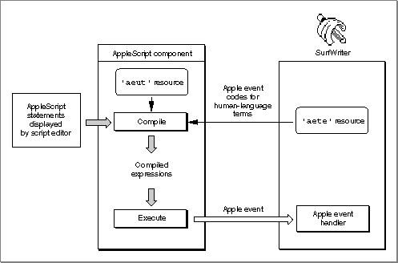
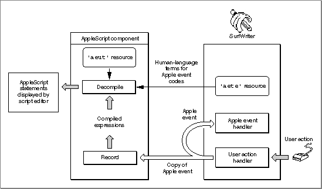

Legacy Document
Important: The information in this document is obsolete and should not be used for new development.
Important: The information in this document is obsolete and should not be used for new development.


About Apple Event Terminology Resources
As explained in the chapter "Introduction to Apple Events" in this book, applications can support different combinations of the standard suites of Apple events. Applications can also extend the definitions of individual Apple events and object classes, or define custom Apple events and object classes. Scripting components use the Apple event user terminology resources,'aeut'and'aete', to associate the IDs, keywords, and other codes used in Apple events with the corresponding human-language terms used in scripts that control your application.The Apple event user terminology (
'aeut') resource contains terminology information for all the standard suites of Apple events defined in the Apple Event Registry: Standard Suites. The resource consists of a sequence of concatenated arrays that map human-language names to each of the following:
Each scripting component provides its own
- the ID defined for each suite
- the Apple events defined for each suite
- the parameters defined for each Apple event
- the Apple event object classes defined for each suite
- the properties defined for each object class
- the elements defined for each object class
- the key forms defined for each element class
- the comparison operators defined for each suite
- the values for enumerators defined for each suite
'aeut'resource. A scripting component can also provide different versions of the'aeut'resource; for example, the user terminology provided by the'aeut'resource for the AppleScript Japanese dialect component is in Japanese. The IDs, keywords, and other codes listed in the'aeut'resource are based on the Apple Event Registry: Standard Suites and do not vary from one version to another.An
'aete'resource has the same format as the'aeut'resource but serves a different purpose. Each scriptable application must include its own'aete'resource describing which of the standard suites listed in the'aeut'resource it supports and providing other application-specific information. Since the human-language equivalents for the standard suites are defined in the'aeut'resource, applications that support standard suites without any modifications do not have to define such equivalents; instead, they can simply list, in the'aete'resource, the suites they support. The scripting component associates the standard suites listed in the'aete'resource with the corresponding Apple event descriptions in its'aeut'resource.Applications can also use the
'aete'resource to describe extensions to the standard suites, such as additional parameters for standard Apple events, additional properties and element classes for the standard Apple event object classes, and additional key forms for each element class. Information about such extensions must be included in the appropriate arrays of the'aete'resource, along with the equivalent human-language terms. Similarly, an application can use the'aete'resource to describe the parts of each standard suite it supports (if it doesn't support the entire suite) and any custom Apple events or Apple event object classes defined by the application.The human language in which your Apple event extensions or custom Apple events are displayed in scripts depends on the corresponding user terminology you specify in your application's
'aete'resource. Therefore, if your application implements such extensions or custom Apple events, you must provide a separate version of this resource for each localized version of your application.Scripting components can use the information in the
'aete'and'aeut'resources in a variety of ways. The next section, "How AppleScript Uses Terminology Information," describes how the AppleScript component uses these resources when it executes or records a script. The next chapter, "Apple Event Terminology Resources," describes how to create an'aete'resource for your application.If you want users to be able to control your application with scripts written in the AppleScript scripting language, you also need to know how the AppleScript component interprets AppleScript commands that trigger Apple events. In this way, you can make sure you support Apple events and specify the user terminology for your
'aete'resource in a way that translates easily into AppleScript statements. The section "Defining Terminology for Use by the AppleScript Component," which begins on page 8-3, discusses these issues. If you implement Apple events so that they translate into logical and useful AppleScript scripts, your implementation will probably work well with other scripting components that resemble AppleScript.How AppleScript Uses Terminology Information
The manner in which the AppleScript component uses the information in'aete'resources depends on specific characteristics of the AppleScript scripting language. An AppleScript expression consists of an internal compiled form and corresponding expressions in dialects, or versions of the AppleScript scripting language that resemble different human languages. Users can select the dialect they want to use from within the Script Editor application. If a script is displayed in a window and the user selects a different dialect, the AppleScript component converts the script to the new dialect. Users can install additional dialects as necessary.This section describes how the AppleScript component uses the information in the
'aeut'and'aete'resources, not how it obtains that information. For a description of the methods available to scripting components for loading information from terminology resources, see "Dynamic Loading of Terminology Information" on page 7-16.Figure 7-5 shows how the AppleScript component uses information from its
'aeut'resource and an application's'aete'resource to execute a script that consists of AppleScript statements displayed in a script editor window. When a user executes the script from the script editor (for example, by pressing the Run button in the Script Editor application), the AppleScript component first compiles the script into the equivalent compiled expressions, using information from its'aeut'resource and the application's'aete'resource to map application-specific terms in the script with the equivalent Apple events and Apple event parameters. The AppleScript component then evaluates each expression and performs actions or sends Apple events as appropriate.For example, the AppleScript component evaluates the expression
2*3as the value 6. The AppleScript component can then decompile and display this value in the script editor window, assign it to a variable, or otherwise manipulate it according to the rest of the script. However, to compile the statement
print Chart 1 of document "Sales Report"the AppleScript component uses its'aeut'resource and the SurfWriter application's'aete'resource to associate the terms used in the script with the Print Apple event, the object class for charts, and the object class for documents, so that it can describe the event accurately in the form of a compiled expression. When the AppleScript component evaluates the compiled expression, it creates and sends a Print event whose direct parameter is an object specifier record that the SurfWriter application can resolve as the specified chart. The SurfWriter application then handles the Apple event by printing the chart as requested.Figure 7-5 Role of the
'aete'and'aeut'resources when the AppleScript component compiles and executes a script
Note that although Figure 7-5 shows only one Apple event generated as a result of executing a script, the AppleScript component could also send a series of Apple events to several different applications, depending on the content of the script.
A recordable application generally needs to be able to send itself a subset of the Apple events that it can handle as a scriptable application. A recordable event is any Apple event that any recordable application sends to itself while recording is turned on for the local computer (with the exception of events that the application explicitly identifies as not for recording purposes). After a user turns on recording from the Script Editor application, the Apple Event Manager sends copies of all recordable events to Script Editor. A scripting component previously selected by the user handles each copied event for Script Editor by translating the event and recording the translation as part of a Script Editor script. When a scripting component executes a recorded script, it sends the corresponding Apple events to the applications in which they were recorded.
Every scripting component must be able to handle copies of recordable events sent to a recording process (such as Script Editor) by recording them in an appropriate form. For example, as shown in Figure 7-6, the AppleScript component records copies of recordable events in the form of compiled expressions. The AppleScript component can then use information from its
'aeut'resource and the application's'aete'resource to translate the compiled expressions into the appropriate human-language terms and display them as AppleScript statements in the script editor window. When the user opens a recorded script in Script Editor and presses Run, the AppleScript component recompiles the script if necessary and sends the Apple events described by the compiled expressions to the SurfWriter application, just as in Figure 7-5.Figure 7-6 Role of the
'aete'and'aeut'resources when the AppleScript component records and decompiles a script
If the user copies a chart from one document to another document and the SurfWriter application performs this task by sending itself Apple events, the equivalent statements in the recorded script might look something like this:
tell application "SurfWriter" select Chart 1 of document "Sales Chart" copy select paragraph 3 of document "Monthly Report" paste end tellTo display these statements in the script editor window, the AppleScript component first translates the Set Data, Copy, and Paste Apple events sent by the recordable application into compiled expressions. It then uses information from its'aeut'resource and the application's'aete'resource to decompile the compiled expressions and pass the equivalent source data to the script editor for display to the user. After completing a recording session, the user can edit and save the resulting script and execute it again at any time.As shown in Figure 7-5 and Figure 7-6, the AppleScript component uses information it obtains from the
'aeut'and'aete'resources when it is compiling and decompiling scripts. Other scripting components might use the same information during execution or recording, or in other ways that are specific to each component.Dynamic Loading of Terminology Information
When a scripting component needs information about the user terminology defined in your application's'aete'resource, it sends a Get AETE event to your application. If your application does not handle the Get AETE event, the scripting component reads the terminology information it needs directly from your application's'aete'resource.Your application does not need to handle the Get AETE event unless it provides separate
'aete'resources for plug-in components. If your application does provide separate plug-in components, the Get AETE event allows it to gather terminology information from the'aete'resources for the components that are currently running and add that information to the reply event.If your application handles the Get AETE event, you must also provide a scripting size resource. A scripting size resource is a resource of type
'scsz'that provides information about an application's capabilities and preferences for use by scripting components.To take advantage of dynamic loading, your application must be running. Note that if your application does not provide a handler for the Get AETE event, the scripting component can obtain terminology information directly from your application's
'aete'resource even if your application is not running.